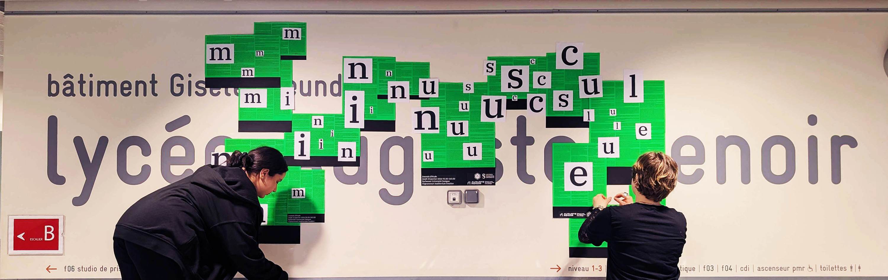

Minuscule
Conception d’affiche pour la journée d’étude 2026 de l’Elmad Renoir en lien avec la Sorbonne sur le thème du Minuscule. L’objectif est de communiqué le thème graphiquement. Ma démarche était de l’évoquer par des jeux d’échelles et de plans.
Le mot minuscule par accumulation d’informations et de supports devient alors imposant et monumental en occupant l’espace.

Projet Minuscule - 2024